#TidyTuesday 2021-05-18: Ask a Manager Salary Survey.
knitr::opts_chunk$set(echo = TRUE)
library(tidyverse)
library(tidytuesdayR)
library(lubridate)
library(gt)
library(dunnr)
extrafont::loadfonts(device = "win", quiet = TRUE)
theme_set(theme_td())
set_geom_fonts()
set_palette()
tt <- tt_load("2021-05-18")
Downloading file 1 of 1: `survey.csv`The data this week comes from the Ask a Manager Survey. From the README:
The salary survey a few weeks ago got a huge response — 24,000+ people shared their salaries and other info, which is a lot of raw data to sift through. Reader Elisabeth Engl kindly took the raw data and analyzed some of the trends in it and here’s what she found. (She asked me to note that she did this as a fun project to share some insights from the survey, rather than as a paid engagement.)
This data does not reflect the general population; it reflects Ask a Manager readers who self-selected to respond, which is a very different group (as you can see just from the demographic breakdown below, which is very white and very female).
It comes with just the single dataframe:
survey <- tt$survey
glimpse(survey)
Rows: 26,232
Columns: 18
$ timestamp <chr> "4/27/2021 11:02:10~
$ how_old_are_you <chr> "25-34", "25-34", "~
$ industry <chr> "Education (Higher ~
$ job_title <chr> "Research and Instr~
$ additional_context_on_job_title <chr> NA, NA, NA, NA, NA,~
$ annual_salary <dbl> 55000, 54600, 34000~
$ other_monetary_comp <dbl> 0, 4000, NA, 3000, ~
$ currency <chr> "USD", "GBP", "USD"~
$ currency_other <chr> NA, NA, NA, NA, NA,~
$ additional_context_on_income <chr> NA, NA, NA, NA, NA,~
$ country <chr> "United States", "U~
$ state <chr> "Massachusetts", NA~
$ city <chr> "Boston", "Cambridg~
$ overall_years_of_professional_experience <chr> "5-7 years", "8 - 1~
$ years_of_experience_in_field <chr> "5-7 years", "5-7 y~
$ highest_level_of_education_completed <chr> "Master's degree", ~
$ gender <chr> "Woman", "Non-binar~
$ race <chr> "White", "White", "~Looks like each row corresponds to a single survey. 26232 survey responses is really impressive. Here is how those were gathered over time:
# Convert character timestamp to a datetime object so we can plot it
survey <- survey %>%
mutate(
timestamp = lubridate::parse_date_time(timestamp, orders = "mdy HMS"),
survey_date = as.Date(timestamp)
)
survey %>%
ggplot(aes(x = survey_date)) +
geom_bar(fill = td_colors$nice$day9_yellow, alpha = 0.6) +
scale_y_continuous(expand = expansion(c(0, 0.07))) +
scale_x_date(breaks = seq.Date(as.Date("2021-05-01"),
as.Date("2021-06-01"), by = "week"))
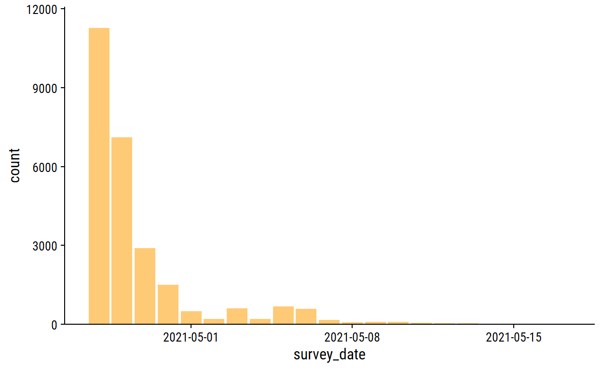
Over 10,000 responses in one day!
Here are the age ranges:
| how_old_are_you | n |
|---|---|
| 18-24 | 1015 |
| 25-34 | 11748 |
| 35-44 | 9398 |
| 45-54 | 3042 |
| 55-64 | 931 |
| 65 or over | 88 |
| under 18 | 10 |
Convert to an ordered factor:
survey <- survey %>%
mutate(
age_range = fct_reorder(
how_old_are_you,
# This will order the factor by the first number in how_old_are_you
parse_number(how_old_are_you)
) %>%
fct_relevel("under 18")
)
survey %>%
ggplot(aes(y = age_range)) +
geom_bar(aes(fill = age_range), show.legend = FALSE) +
scale_fill_viridis_d() +
scale_x_continuous(expand = expansion(c(0, 0.05)))
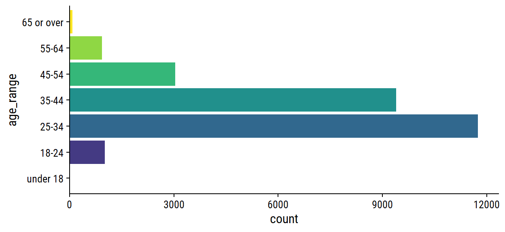
Out of curiosity, these are the 10 survey respondents listed as “under 18”:
survey %>%
filter(age_range == "under 18") %>%
select(industry, job_title, annual_salary, country,
overall_years_of_professional_experience) %>%
gt()
| industry | job_title | annual_salary | country | overall_years_of_professional_experience |
|---|---|---|---|---|
| Education (Primary/Secondary) | Teacher | 45000 | USA | 21 - 30 years |
| Health care | Undergraduate Research Assistant | 17000 | United States | 2 - 4 years |
| Retail | Walmart cashier | 32552 | Canada | 2 - 4 years |
| Health care | Intern | 29120 | U.S. | 2 - 4 years |
| Nonprofits | Finance Director | 118000 | United States | 31 - 40 years |
| Health care | Doctor | 220000 | United States | 2 - 4 years |
| Leisure, Sport & Tourism | Lifeguard, Swim Instructor | 34320 | United States | 1 year or less |
| Leisure, Sport & Tourism | Head Lifegaurd | 31200 | United States | 2 - 4 years |
| Law | Records manager | 106000 | USA | 41 years or more |
| Retail | Technology Manager | 100200 | USA | 21 - 30 years |
Some pretty impressive teenagers here. I think my favorite are the ones with more years of experience than years alive.
As for the industry variable, I know from checking out the survey itself that there are 26 options, +1 “Other” option to enter free-text. Do the most frequent 26 industry correspond to those preset options?
survey %>%
count(industry, sort = T) %>%
head(30) %>%
mutate(rank = 1:n()) %>% relocate(rank) %>%
gt() %>%
tab_options(container.height = 300, container.overflow.y = TRUE)
| rank | industry | n |
|---|---|---|
| 1 | Computing or Tech | 4360 |
| 2 | Education (Higher Education) | 2359 |
| 3 | Nonprofits | 2331 |
| 4 | Government and Public Administration | 1821 |
| 5 | Health care | 1739 |
| 6 | Accounting, Banking & Finance | 1688 |
| 7 | Engineering or Manufacturing | 1519 |
| 8 | Marketing, Advertising & PR | 1064 |
| 9 | Law | 1050 |
| 10 | Education (Primary/Secondary) | 805 |
| 11 | Business or Consulting | 778 |
| 12 | Media & Digital | 732 |
| 13 | Insurance | 500 |
| 14 | Retail | 450 |
| 15 | Recruitment or HR | 429 |
| 16 | Property or Construction | 350 |
| 17 | Art & Design | 327 |
| 18 | Utilities & Telecommunications | 324 |
| 19 | Transport or Logistics | 270 |
| 20 | Sales | 262 |
| 21 | Social Work | 260 |
| 22 | Entertainment | 234 |
| 23 | Hospitality & Events | 234 |
| 24 | Agriculture or Forestry | 130 |
| 25 | Leisure, Sport & Tourism | 96 |
| 26 | Publishing | 59 |
| 27 | NA | 59 |
| 28 | Library | 54 |
| 29 | Libraries | 51 |
| 30 | Biotech | 48 |
Not quite. industry = “Publishing” is the 26th most frequent despite not being a preset option, for example. Make a factor out of this variable, and group anything infrequent (<100 occurrences) into “Other”:
survey <- survey %>%
mutate(
industry_factor = fct_infreq(industry) %>%
fct_lump_min(min = 100)
)
survey %>%
ggplot(aes(y = industry_factor)) +
geom_bar(fill = td_colors$nice$indigo_blue) +
scale_x_continuous(expand = c(0, 0))
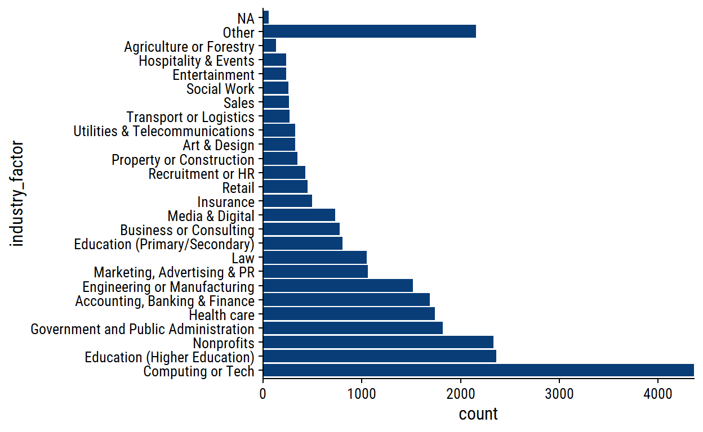
The “Other” category accounts for a lot of responses.
The job_title variable is entirely free-text so will be difficult to use for any analysis/visualization, but here are the most common responses:
How about job titles related to data or statistics or machine learning?
survey %>%
filter(
str_detect(job_title,
regex("data|statistic|machine learn", ignore_case = TRUE))
) %>%
count(job_title, sort = T) %>%
rmarkdown::paged_table()
I might check this out later – quite a few responses.
In terms of location, we have country, state, and city, but I’ll just be looking at just the country level for now:
survey %>%
count(country, sort = T) %>%
rmarkdown::paged_table()
This is in need of some data cleaning obviously– a lot of variations on “United States”, for example. I’ll also consolidate England, Scotland, Northern Ireland and Wales into the UK.
survey <- survey %>%
mutate(
country_clean = str_remove_all(tolower(country), "\\."),
country_clean = case_when(
str_detect(country_clean,
"states|^us|america|d state|^u s|sates") ~ "USA",
str_detect(country_clean,
"kingdom|^uk|england|scotland|wales|northern i|britain") ~ "UK",
str_detect(country_clean,
"canada|canda|canadw|csnada") ~ "Canada",
str_detect(country_clean, "austral") ~ "Australia",
str_detect(country_clean, "brazil|brasil") ~ "Brazil",
str_detect(country_clean, "zealand|nz") ~ "New Zealand",
# If less than three letters, put in all caps
nchar(country_clean) <= 3 ~ toupper(country_clean),
# Otherwise, title case
TRUE ~ str_to_title(country_clean)
)
)
survey %>%
count(country, country_clean, sort = T) %>%
rmarkdown::paged_table()
I think that did a pretty reasonable job of consolidating spellings/misspellings of the most common countries. Visualize the counts, lumping any countries with <20 responses into “Other”:
survey %>%
mutate(
country_fact = fct_infreq(country_clean) %>%
fct_lump_min(min = 20)
) %>%
ggplot(aes(y = country_fact)) +
geom_bar(fill = td_colors$nice$strong_red) +
scale_x_continuous(expand = c(0, 0)) +
labs(y = NULL)
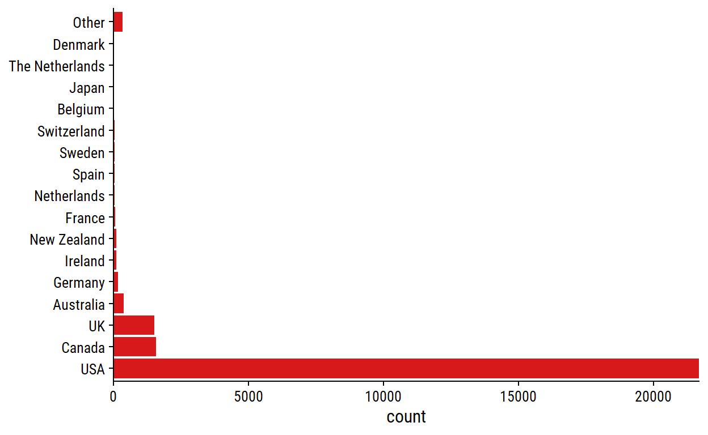
Unsurprisingly for a mostly US-based blog, a large majority of respondents are based in America.
Thankfully, the currency option was a dropdown selection in the survey, so less data cleaning will be needed:
| currency | n |
|---|---|
| USD | 21852 |
| CAD | 1564 |
| GBP | 1521 |
| EUR | 585 |
| AUD/NZD | 469 |
| Other | 133 |
| CHF | 35 |
| SEK | 34 |
| JPY | 22 |
| ZAR | 13 |
| HKD | 4 |
Check out the other currency:
survey %>%
filter(currency == "Other") %>%
count(currency_other, sort = TRUE) %>%
rmarkdown::paged_table()
These have few enough responses that they probably aren’t worth cleaning. Just make currency a factor in order of frequency:
survey <- survey %>%
mutate(currency = fct_infreq(currency))
These are the country-currency combinations for USA, Canada and the UK:
survey %>%
filter(country_clean %in% c("USA", "Canada", "UK")) %>%
count(country_clean, currency, sort = TRUE) %>%
rmarkdown::paged_table()
annual_salary and other_monetary_comp are the key variables of this data, but they must be interpreted with currency in mind. First, look for improper (negative, non-numeric) responses:
survey %>%
filter(
# Missing annual salary
is.na(annual_salary) | is.na(as.numeric(annual_salary)) |
# Zero or negative annual salary
(as.numeric(annual_salary) <= 0) |
# Negative other compensation
(as.numeric(other_monetary_comp) < 0)
) %>%
select(industry, job_title, annual_salary, other_monetary_comp,
additional_context_on_income) %>%
rmarkdown::paged_table()
So 10 cases of annual_salary = 0. In 2 of those cases, the other_monetary_comp makes up the difference, so I’ll create a total_salary variable adding those two:
survey <- survey %>%
mutate(
total_salary = ifelse(
is.na(other_monetary_comp),
as.numeric(annual_salary),
as.numeric(annual_salary) + as.numeric(other_monetary_comp)
)
) %>%
# Remove those 8 cases of 0 income
filter(total_salary > 0)
Visualize income on a log scale for the most common currencies:
p <- survey %>%
filter(currency %in% c("USD", "CAD", "GBP", "EUR")) %>%
ggplot(aes(x = total_salary, y = currency)) +
geom_violin(aes(fill = currency), show.legend = FALSE) +
scale_x_log10(labels = scales::label_dollar()) +
facet_wrap(~currency, scales = "free") +
remove_axis("y") +
add_facet_borders()
p
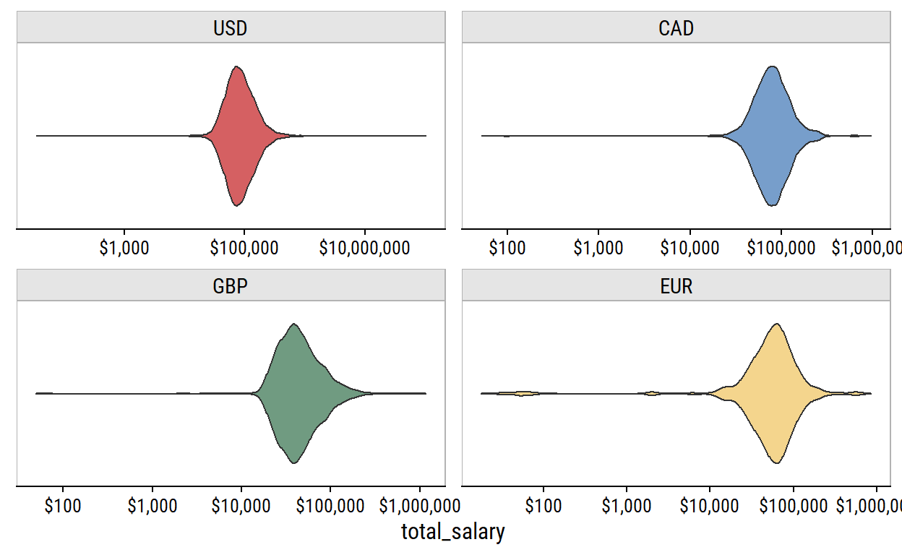
Even on a log scale, there are a lot of outliers in each currency. If we trim the data to only have the inner 95%:
p %+%
(
survey %>%
filter(currency %in% c("USD", "CAD", "GBP", "EUR")) %>%
group_by(currency) %>%
filter(
total_salary < quantile(total_salary, 0.975),
total_salary > quantile(total_salary, 0.025)
)
)
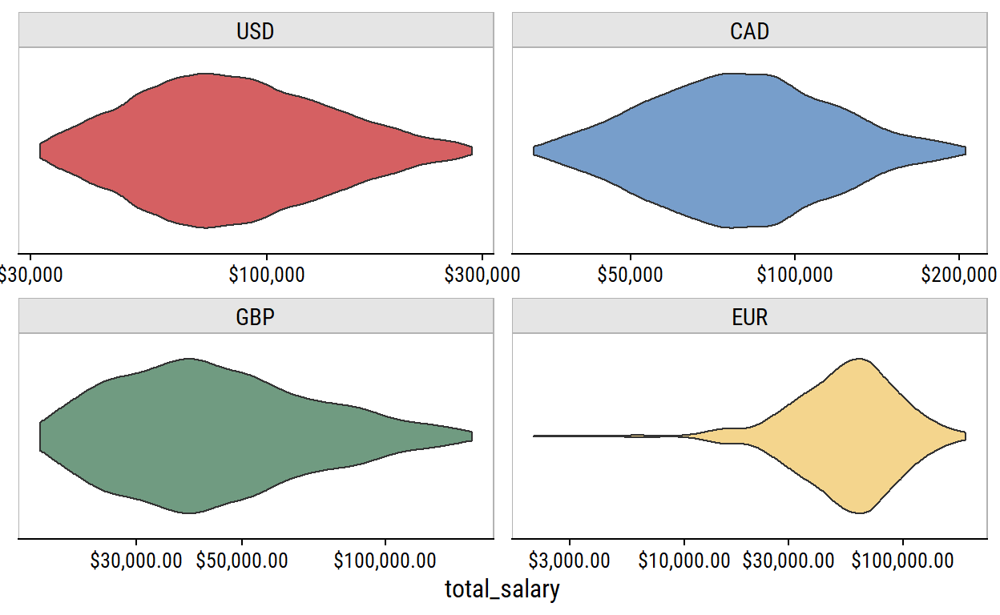
These are much more reasonable salary ranges.
There are two variables related to years of experience:
survey %>%
count(overall_years_of_professional_experience) %>%
rmarkdown::paged_table()
survey %>%
count(years_of_experience_in_field) %>%
rmarkdown::paged_table()
The same 8 levels were used. Like with the age variable, we can parse these numbers and put them into ordered factors:
survey <- survey %>%
mutate(
across(
c(years_of_experience_in_field,
overall_years_of_professional_experience),
~fct_reorder(., parse_number(.))
)
)
survey %>%
count(years_of_experience_in_field,
overall_years_of_professional_experience) %>%
ggplot(aes(x = years_of_experience_in_field,
y = overall_years_of_professional_experience)) +
geom_tile(aes(fill = n), show.legend = FALSE) +
geom_text(aes(label = n), color = "white") +
scale_x_discrete(expand = c(0, 0)) +
scale_y_discrete(expand = c(0, 0)) +
theme(axis.text.x = element_text(angle = 25, vjust = 0.8))
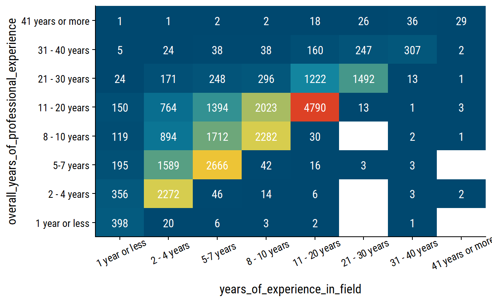
In each case except “41 years or more”, the diagonal of overall_years_of_professional_experience = years_of_experience_in_field is the most frequent co-occurence.
The education options:
survey %>%
count(highest_level_of_education_completed, sort = T) %>%
rmarkdown::paged_table()
We’ll put it in a factor manually ordered by the most years to complete (on average):
survey <- survey %>%
mutate(
highest_level_of_education_completed = factor(
highest_level_of_education_completed,
levels = c("High School", "Some college", "College degree",
"Master's degree", "Professional degree (MD, JD, etc.)", "PhD")
)
)
survey %>%
mutate(
highest_level_of_education_completed = fct_explicit_na(
highest_level_of_education_completed
)
) %>%
ggplot(aes(y = highest_level_of_education_completed)) +
geom_bar(aes(fill = highest_level_of_education_completed),
show.legend = FALSE) +
scale_fill_viridis_d() +
scale_x_continuous(expand = expansion(c(0, 0.1)))
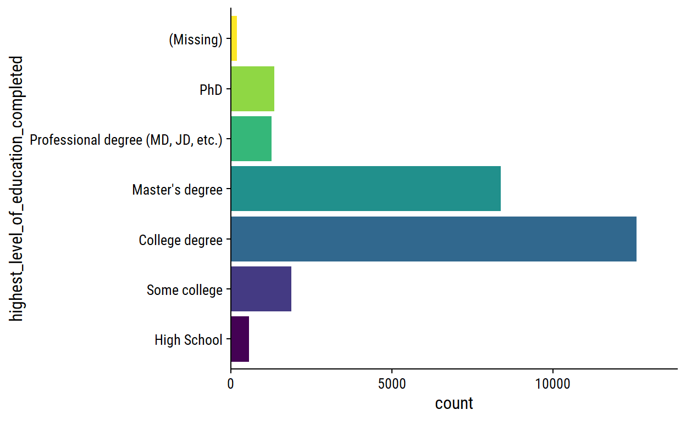
The gender options:
# A tibble: 6 x 2
gender n
<chr> <int>
1 Man 4740
2 Non-binary 713
3 Other or prefer not to answer 267
4 Prefer not to answer 1
5 Woman 20355
6 <NA> 148We can put the “Prefer not to answer” response into the appropriate category, and make a factor:
survey <- survey %>%
mutate(gender = ifelse(gender == "Prefer not to answer",
"Other or prefer not to answer", gender),
gender = fct_infreq(gender))
survey %>%
mutate(gender = fct_explicit_na(gender)) %>%
ggplot(aes(y = gender)) +
geom_bar(aes(fill = gender), show.legend = FALSE) +
scale_x_continuous(expand = c(0, 0))
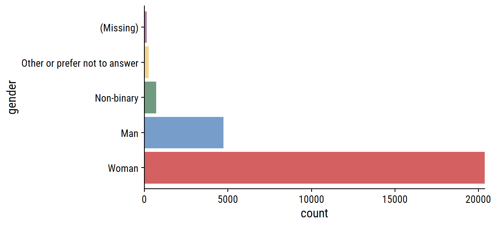
A lot more women respondents than men.
The race variable was a “Choose all that apply” question:
survey %>%
count(race, sort = T) %>%
rmarkdown::paged_table()
The responses are split by commas, but the “Hispanic, Latino, or Spanish origin” option has commas itself. We can approach this two ways. (1) Remove the extra commas, tokenize the answers, and store it in a column vector:
survey <- survey %>%
mutate(
race = str_replace(
race,
"Hispanic, Latino, or Spanish",
"Hispanic Latino or Spanish"
),
race_split = str_split(
race,
pattern = ", "
)
)
survey %>%
select(race, race_split) %>%
head(30) %>%
rmarkdown::paged_table()
Then to get race counts, we unnest the race_split column:
survey %>%
mutate(n_respondents = n()) %>%
unnest(race_split) %>%
count(race_split, n_respondents) %>%
mutate(
p = n / n_respondents,
race = fct_reorder(race_split, n) %>% fct_explicit_na()
) %>%
ggplot(aes(y = race, x = p)) +
geom_text(aes(label = scales::percent(p, accuracy = 0.1)), nudge_x = 0.05) +
geom_col(fill = td_colors$nice$soft_orange) +
scale_x_continuous("Percentage of respondents",
labels = scales::percent,
expand = c(0, 0), limits = c(0, 1))
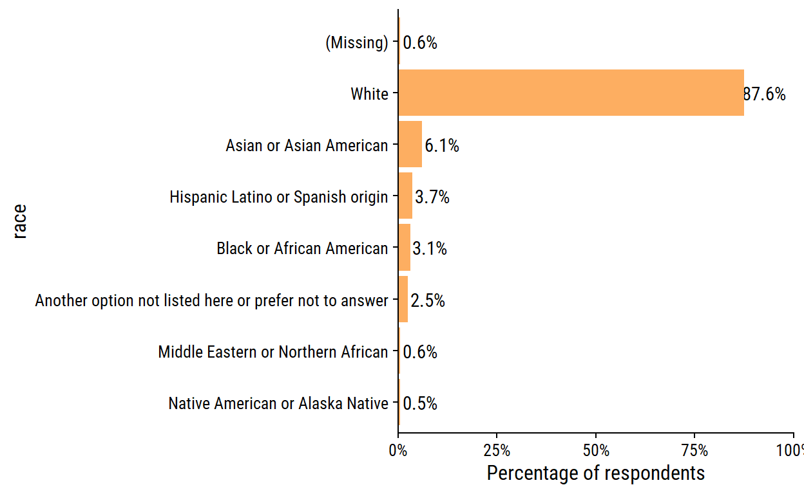
Or (2) manually create indicator variables for each response:
survey <- survey %>%
mutate(
white = str_detect(race, "White"),
asian = str_detect(race, "Asian"),
black = str_detect(race, "Black"),
hispanic_latino_spanish = str_detect(race, "Hispanic"),
middle_eastern_northern_african = str_detect(race, "Middle Eastern"),
native_american_alaska = str_detect(race, "Native"),
other_na = str_detect(race, "Another option")
) %>%
# Need to fix NA values
mutate(
across(white:other_na, ~replace_na(., FALSE))
)
survey %>%
# Add an indicator if NA race
mutate(missing = is.na(race)) %>%
summarise(across(white:missing, ~mean(.))) %>%
pivot_longer(everything(), names_to = "race", values_to = "p") %>%
mutate(race = fct_reorder(race, p)) %>%
ggplot(aes(y = race, x = p)) +
geom_text(aes(label = scales::percent(p, accuracy = 0.1)), nudge_x = 0.05) +
geom_col(fill = td_colors$nice$soft_orange) +
scale_x_continuous("Percentage of respondents",
labels = scales::percent,
expand = c(0, 0), limits = c(0, 1))
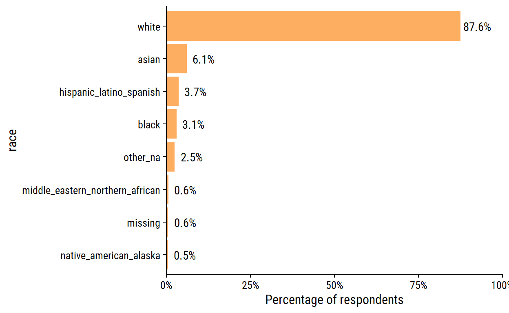
Same percentages, just different labels on the race variable because of how the data were wrangled.
After exploring the data, I decided I’d like to analyze the salaries of the data-oriented professions in Canada and the US. Filter by job_title:
survey_data <- survey %>%
filter(
country_clean %in% c("USA", "Canada"),
str_detect(job_title,
regex("data|statistic|stats|machine learn", ignore_case = TRUE))
)
survey_data %>%
count(job_title, sort = T) %>%
rmarkdown::paged_table()
257 unique job_titles if far too many, so I’ll attempt to bucket them into general titles:
survey_data <- survey_data %>%
mutate(
job_title_factor = tolower(job_title),
job_title_factor = case_when(
str_detect(job_title_factor, "analyst|analyti") ~ "Data analyst",
str_detect(job_title_factor, "scientist|data sci") ~ "Data scientist",
str_detect(job_title_factor,
"(data|database) engineer") ~ "Data engineer",
str_detect(job_title_factor,
"machine learning") ~ "Machine learning engineer",
str_detect(
job_title_factor,
"(data|database) (man|dev|admin|assoc|special|assist)|librar"
) ~ "Database specialist",
str_detect(job_title_factor, "statistician") ~ "Statistician",
str_detect(
job_title_factor,
"director|manager|(lead|leader|head|supervisor)$|coordin|assoc dir|^(head|lead)"
) ~ "Director/manager/lead/coordinator/supervisor",
str_detect(job_title_factor, "entry|processor") ~ "Data entry",
str_detect(job_title_factor, "architect") ~ "Data architect",
str_detect(job_title_factor, "consult") ~ "Consultant",
str_detect(job_title_factor,
"statistical prog") ~ "Statistical programmer",
TRUE ~ "Other"
),
job_title_factor = fct_infreq(job_title_factor)
)
A few of my choices in the above categorization that should be noted:
We now have the following distribution of job_title:
survey_data %>%
ggplot(aes(y = job_title_factor)) +
geom_bar() +
scale_x_continuous(expand = c(0, 0))
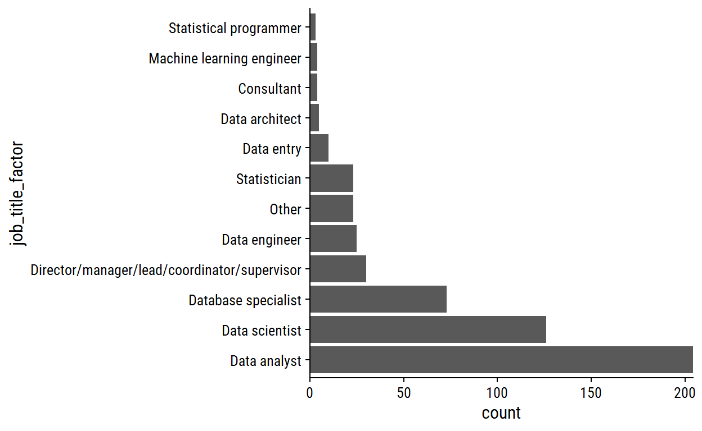
Distribution of currency:
survey_data %>%
count(currency) %>%
rmarkdown::paged_table()
A single case of currency = “Other”:
survey_data %>%
filter(currency == "Other") %>%
select(annual_salary, other_monetary_comp, currency, currency_other,
additional_context_on_income, country, state) %>%
glimpse()
Rows: 1
Columns: 7
$ annual_salary <dbl> 135000
$ other_monetary_comp <dbl> NA
$ currency <fct> Other
$ currency_other <chr> "USD"
$ additional_context_on_income <chr> NA
$ country <chr> "US"
$ state <chr> "Illinois"Seems like they meant to put USD.
survey_data <- survey_data %>%
mutate(currency = ifelse(currency == "Other", "USD", as.character(currency)))
Distribution of currency by country:
survey_data %>%
count(currency, country_clean) %>%
rmarkdown::paged_table()
A single case of someone in Canada being paid in USD:
Rows: 1
Columns: 32
$ timestamp <dttm> 2021-04-28 15:31:11
$ how_old_are_you <chr> "55-64"
$ industry <chr> "Computing or Tech"
$ job_title <chr> "Senior Data Scien~
$ additional_context_on_job_title <chr> NA
$ annual_salary <dbl> 170000
$ other_monetary_comp <dbl> 20000
$ currency <chr> "USD"
$ currency_other <chr> NA
$ additional_context_on_income <chr> NA
$ country <chr> "Canada"
$ state <chr> NA
$ city <chr> "Annapolis Valley"
$ overall_years_of_professional_experience <fct> 41 years or more
$ years_of_experience_in_field <fct> 41 years or more
$ highest_level_of_education_completed <fct> "Master's degree"
$ gender <fct> Man
$ race <chr> "White"
$ survey_date <date> 2021-04-28
$ age_range <fct> 55-64
$ industry_factor <fct> "Computing or Tech"
$ country_clean <chr> "Canada"
$ total_salary <dbl> 190000
$ race_split <list> "White"
$ white <lgl> TRUE
$ asian <lgl> FALSE
$ black <lgl> FALSE
$ hispanic_latino_spanish <lgl> FALSE
$ middle_eastern_northern_african <lgl> FALSE
$ native_american_alaska <lgl> FALSE
$ other_na <lgl> FALSE
$ job_title_factor <fct> Data scientistSince it is just the one case, I’ll convert their salary to CAD using today’s exchange rate:
Check out total_salary distributions:
survey_data %>%
ggplot(aes(y = currency, x = total_salary)) +
geom_violin(aes(fill = currency), show.legend = FALSE) +
scale_x_log10(labels = scales::dollar)
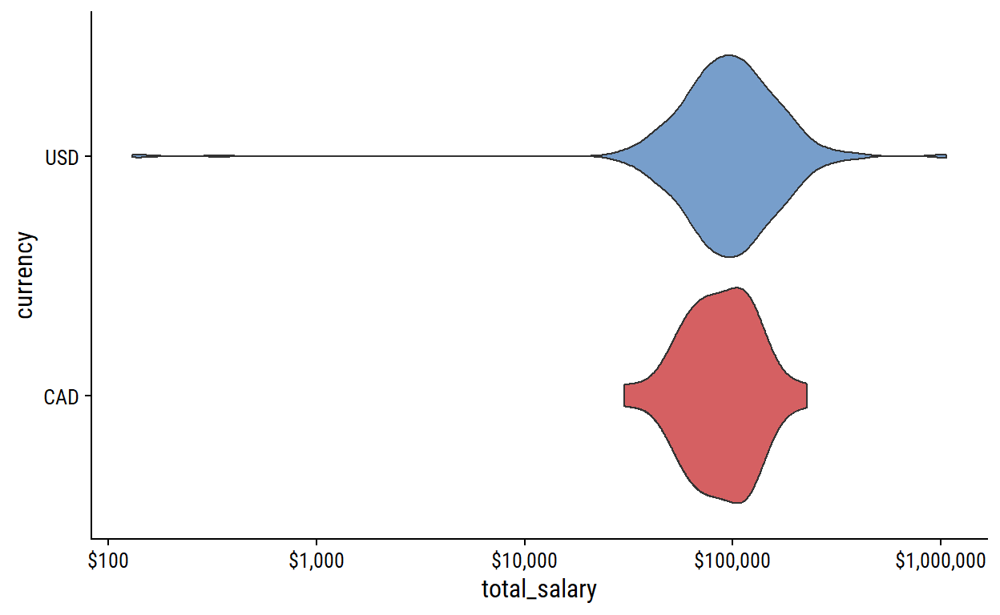
Some pretty bad outliers here – inspect them:
survey_data %>%
filter(total_salary < 20000 | total_salary > 300000) %>%
select(job_title, additional_context_on_job_title,
annual_salary, other_monetary_comp, total_salary, currency,
additional_context_on_income, country_clean, city,
highest_level_of_education_completed, age_range) %>%
arrange(total_salary) %>%
rmarkdown::paged_table()
I’m almost certain that the 3 digit values are in thousands. The largest outliers come from other_monetary_comp and, from the additional_context_on_income column, it comes from options/stock I’ll just adjust the two cases where it puts total_salary over 1 million:
We still have a few people with total_salary > $300k, but some are in expensive cities like NYC and San Francisco, so maybe it’s real.
Final processing step, dropping some variables and renaming others:
survey_data <- survey_data %>%
transmute(
age_range, industry = industry_factor,
job_title, job_title_factor = fct_infreq(job_title_factor),
country = country_clean, state, city,
education = highest_level_of_education_completed,
total_salary, currency,
gender, race_split,
# Add total salary in CAD and USD for comparing on the same scale
total_salary_cad = ifelse(currency == "CAD", total_salary,
total_salary * 1.20),
total_salary_usd = ifelse(currency == "USD", total_salary,
total_salary / 1.20)
)
glimpse(survey_data)
Rows: 530
Columns: 14
$ age_range <fct> 25-34, 25-34, 35-44, 25-34, 18-24, 35-44, 2~
$ industry <fct> "Health care", "Government and Public Admin~
$ job_title <chr> "Data Programmer Analyst", "Manager of Data~
$ job_title_factor <fct> Data analyst, Director/manager/lead/coordin~
$ country <chr> "USA", "USA", "USA", "USA", "USA", "USA", "~
$ state <chr> "Pennsylvania", "Virginia", "North Carolina~
$ city <chr> "Philadelphia", "Richmond", "Raleigh", "Chi~
$ education <fct> "Master's degree", "College degree", "Maste~
$ total_salary <dbl> 74000, 65000, 80000, 100000, 62000, 195000,~
$ currency <chr> "USD", "USD", "USD", "USD", "USD", "USD", "~
$ gender <fct> Woman, Man, Woman, Woman, Woman, Non-binary~
$ race_split <list> "White", "White", "White", "White", "White~
$ total_salary_cad <dbl> 88800.0, 78000.0, 96000.0, 120000.0, 74400.~
$ total_salary_usd <dbl> 74000.00, 65000.00, 80000.00, 100000.00, 62~530 respondents, which represents 2% of the full data. Distribution by job_title and country:
# Canada red and USA blue
country_colors <- c("#FF0000", "#3B3B6D")
survey_data %>%
group_by(country) %>%
mutate(country_n = glue::glue("{country} (n = {n()})")) %>%
ggplot(aes(y = job_title_factor)) +
geom_bar(aes(fill = country_n)) +
scale_x_continuous("Number of respondents", expand = c(0, 0)) +
scale_fill_manual(NULL, values = country_colors) +
labs(y = NULL) +
theme(legend.position = c(0.6, 0.7))
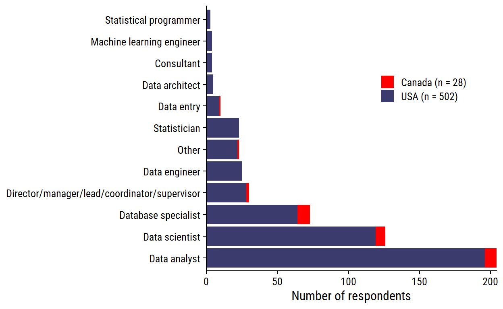
Finally, plot the salaries by job title, ordered by sample size:
library(ggtext)
p_subtitle <-
glue::glue(
"From <span style='color:{country_colors[2]}; font-weight:bold'>",
"{sum(survey_data$country == 'USA')} American</span> and ",
"<span style='color:{country_colors[1]}; font-weight:bold'>",
"{sum(survey_data$country == 'Canada')} Canadian</span> ",
"survey respondents"
)
survey_data %>%
add_count(job_title_factor) %>%
mutate(job_title_factor = fct_reorder(job_title_factor, n)) %>%
ggplot(aes(y = job_title_factor, x = total_salary_cad)) +
geom_boxplot(outlier.shape = NA) +
geom_jitter(aes(color = country), width = 0, height = 0.25,
alpha = 0.5, show.legend = FALSE) +
labs(title = "Salary distributions by job title",
subtitle = p_subtitle,
caption = paste0("data from Ask a Manager | ",
"plot by @TDunn12 for #TidyTuesday")) +
scale_fill_manual(NULL, values = country_colors) +
scale_x_log10("Total salary in CAD (log scale)", labels = scales::dollar,
breaks = c(30000, 50000, 100000, 200000, 300000)) +
scale_y_discrete(NULL, labels = ~str_wrap(., width = 30)) +
theme(panel.grid.major.x = element_line(color = "grey95"),
plot.subtitle = element_markdown())
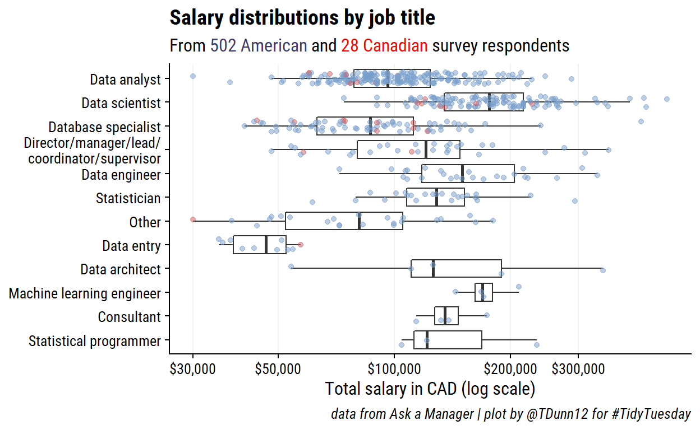
setting value
version R version 4.1.3 (2022-03-10)
os Windows 10 x64
system x86_64, mingw32
ui RTerm
language (EN)
collate English_Canada.1252
ctype English_Canada.1252
tz America/Curacao
date 2022-03-27 Local: main C:/Users/tdunn/Documents/tdunn
Remote: main @ origin (https://github.com/taylordunn/tdunn)
Head: [451ff9b] 2022-03-27: Rebuild siteFor attribution, please cite this work as
Dunn (2021, May 18). tdunn: TidyTuesday 2021 Week 21. Retrieved from https://tdunn.ca/posts/2021-05-18-tidytuesday-2021-week-21/
BibTeX citation
@misc{dunn2021tidytuesday,
author = {Dunn, Taylor},
title = {tdunn: TidyTuesday 2021 Week 21},
url = {https://tdunn.ca/posts/2021-05-18-tidytuesday-2021-week-21/},
year = {2021}
}